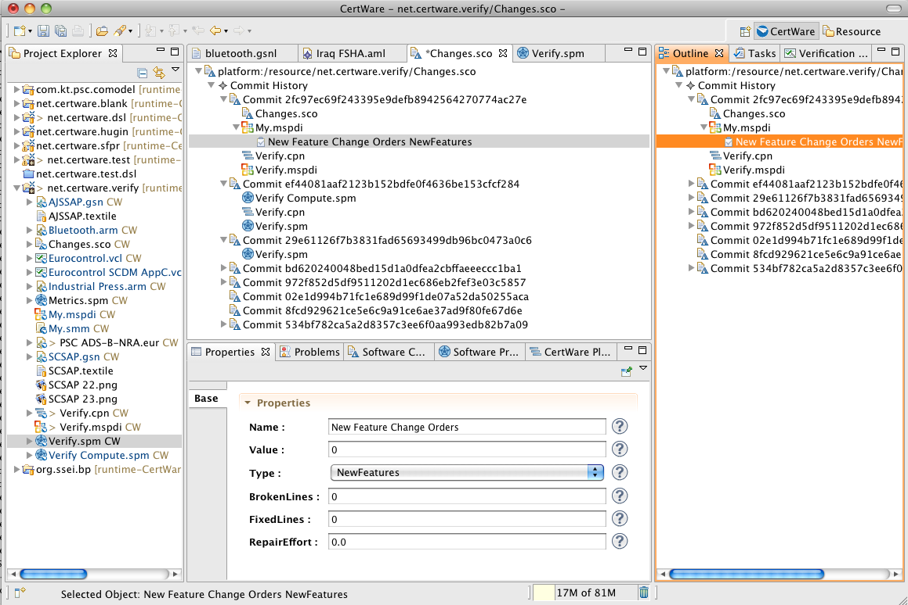
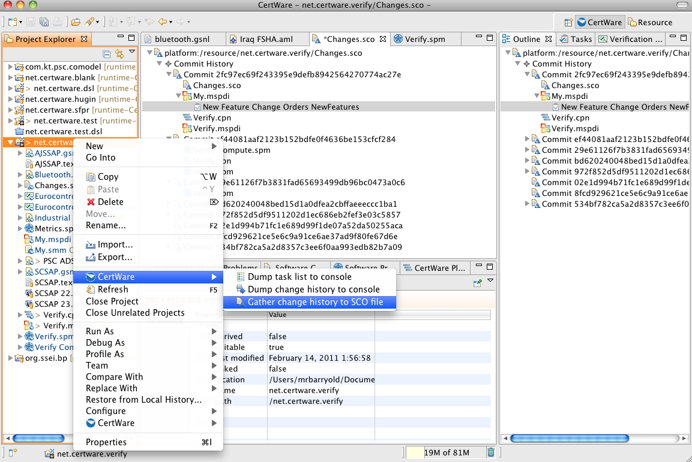

References
- Documents
Software Change Orders
Our safety case metrics suite depends on change order counts for critical, normal, improvement, and new feature change order types. With each count there are related statistics for the repair effort, broken lines, and fixed lines associated with each model artifact. We collect these for each commit of the artifacts into the version control system, preserving them in a software change order (SCO) model. The SCO model then provides these statistics for use in computing the software project metrics values.
Today the workbench can gather the version control commit identifiers from each commit, counting the current lines in each artifact. Because the lines are not tagged or associated with change order paper, the analyst will have to enter the change order counts and broken/fixed line counts manually, but in the future one can integrate this model with the organization's application lifecycle management (ALM) tools to collect the values automatically. CertWare will add these capabilities in the future.
To gather these statistics, presuming the artifacts and project are managed with the EGit distributed version control feature for Eclipse, select the containing project's context menu and choose the Gather change history to SCO file menu item. This will process the commit history and create an SCO file in the same project container. See the figure below for the menu selection.
The SCO model editor is shown in the figure.
The gather statistics menu item is shown in the following figure.
